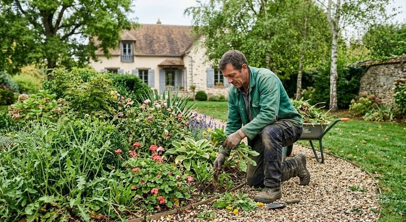
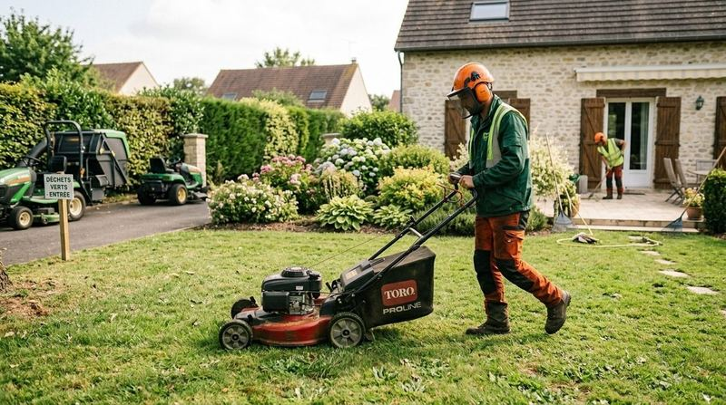
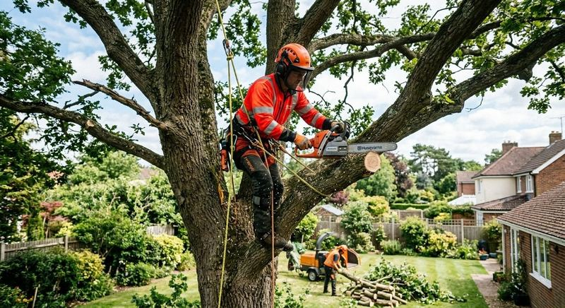
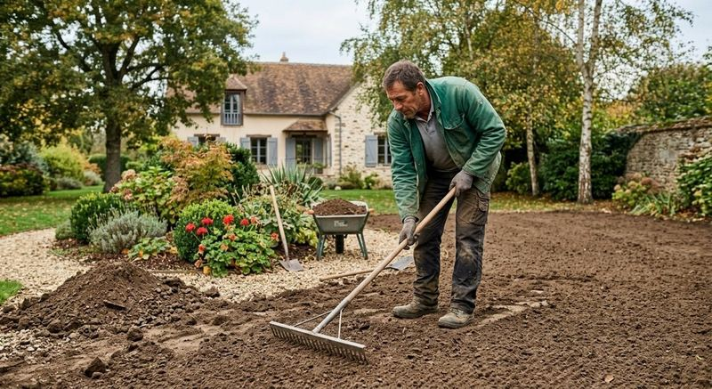

Conception et réalisation
Création de jardins
Nous concevons le jardin avec vous, puis nous réalisons les aménagements prévus.
Les parcs et jardins privés ou publics sont notre terrain. Choisissez par où commencer.


De la conception à la réalisation, y compris les ouvrages en pierre et les limites de propriété.
Nous concevons le jardin avec vous, puis nous réalisons les aménagements prévus.

Murets, escaliers et ouvrages de pierre intégrés au jardin.
Des clôtures pour délimiter et protéger votre propriété.
ALL GARDEN entretient les espaces verts de ses clients tout au long de l'année. Parlez-nous de votre jardin, nous vous dirons ce qu'il demande.



Un arbre qui gêne, penche ou vieillit mérite un avis. ALL GARDEN intervient sur les arbres et regarde leur état sanitaire.
Intervention sur les branches des arbres de votre jardin ou de votre parc.
Abattage d'arbres lorsque la situation le demande.
Un regard sur la santé de vos arbres pour décider s'il faut intervenir.
Décrivez votre besoin en quelques lignes ou appelez directement l'équipe.
06 10 93 16 46